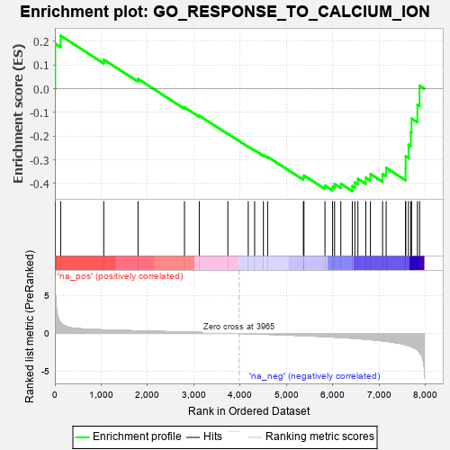
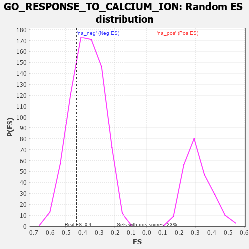

| | | Dataset | 7d |
| Phenotype | NoPhenotypeAvailable |
| Upregulated in class | na_neg |
| GeneSet | GO_RESPONSE_TO_CALCIUM_ION |
| Enrichment Score (ES) | -0.43207762 |
| Normalized Enrichment Score (NES) | -1.1728909 |
| Nominal p-value | 0.2624021 |
| FDR q-value | 0.6625513 |
| FWER p-Value | 1.0 |
Table: GSEA Results Summary

Fig 1: Enrichment plot: GO_RESPONSE_TO_CALCIUM_ION
Profile of the Running ES Score & Positions of GeneSet Members on the Rank Ordered List
| PROBE | GENE SYMBOL | GENE_TITLE | RANK IN GENE LIST | RANK METRIC SCORE | RUNNING ES | CORE ENRICHMENT | | 1 | SYT2 | | | 8 | 5.577 | 0.1896 | No |
| 2 | ADCY8 | | | 124 | 1.418 | 0.2235 | No |
| 3 | MEF2C | | | 1054 | 0.473 | 0.1227 | No |
| 4 | ALG2 | | | 1794 | 0.339 | 0.0412 | No |
| 5 | AQP3 | | | 2796 | 0.184 | -0.0785 | No |
| 6 | SYT8 | | | 3115 | 0.135 | -0.1140 | No |
| 7 | SYT11 | | | 3732 | 0.036 | -0.1903 | No |
| 8 | SYT12 | | | 4172 | -0.037 | -0.2443 | No |
| 9 | SYT17 | | | 4310 | -0.061 | -0.2595 | No |
| 10 | MEF2A | | | 4499 | -0.095 | -0.2799 | No |
| 11 | SYT4 | | | 4590 | -0.116 | -0.2873 | No |
| 12 | ITPR3 | | | 5361 | -0.288 | -0.3744 | No |
| 13 | CPNE9 | | | 5374 | -0.289 | -0.3660 | No |
| 14 | ANXA7 | | | 5827 | -0.413 | -0.4088 | No |
| 15 | SYT9 | | | 5992 | -0.469 | -0.4135 | Yes |
| 16 | TRPC3 | | | 6035 | -0.483 | -0.4023 | Yes |
| 17 | STIM1 | | | 6169 | -0.528 | -0.4010 | Yes |
| 18 | CPNE2 | | | 6417 | -0.627 | -0.4107 | Yes |
| 19 | SYT15 | | | 6472 | -0.650 | -0.3952 | Yes |
| 20 | CPNE8 | | | 6538 | -0.680 | -0.3802 | Yes |
| 21 | EGFR | | | 6708 | -0.765 | -0.3753 | Yes |
| 22 | ADAM9 | | | 6808 | -0.819 | -0.3598 | Yes |
| 23 | CPNE5 | | | 7070 | -0.977 | -0.3593 | Yes |
| 24 | SYT1 | | | 7148 | -1.033 | -0.3337 | Yes |
| 25 | CALM1 | | | 7567 | -1.499 | -0.3351 | Yes |
| 26 | TRPV6 | | | 7569 | -1.502 | -0.2839 | Yes |
| 27 | PDCD6 | | | 7630 | -1.615 | -0.2363 | Yes |
| 28 | TRPM2 | | | 7680 | -1.712 | -0.1840 | Yes |
| 29 | ADCY1 | | | 7695 | -1.752 | -0.1259 | Yes |
| 30 | PKD2 | | | 7822 | -2.167 | -0.0677 | Yes |
| 31 | CALM3 | | | 7869 | -2.525 | 0.0128 | Yes |
Table: GSEA details [plain text format]

Fig 2: GO_RESPONSE_TO_CALCIUM_ION: Random ES distribution
Gene set null distribution of ES for GO_RESPONSE_TO_CALCIUM_ION